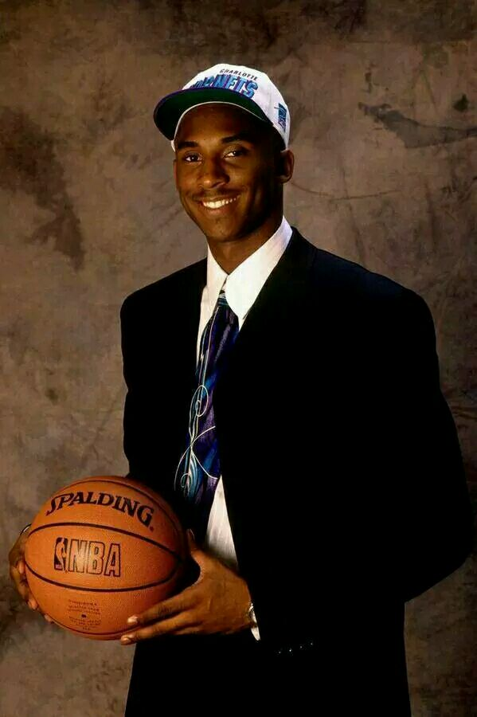
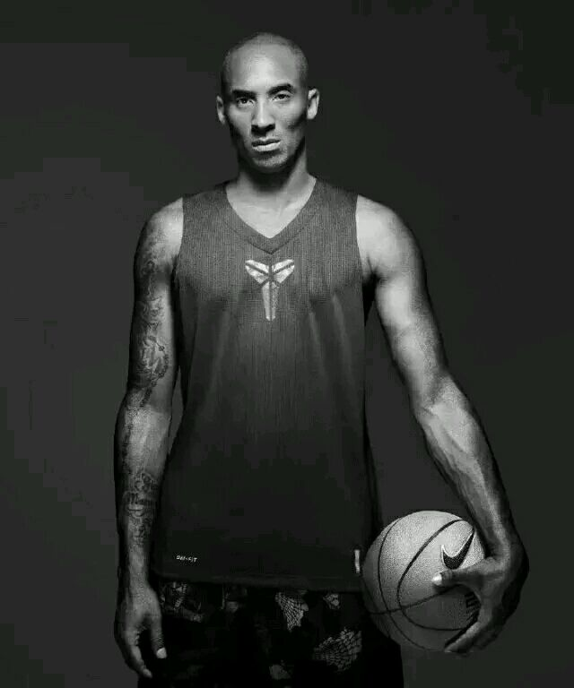
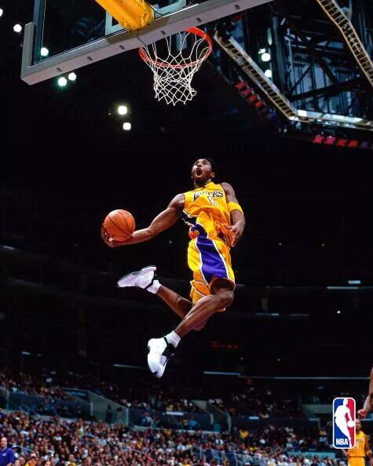
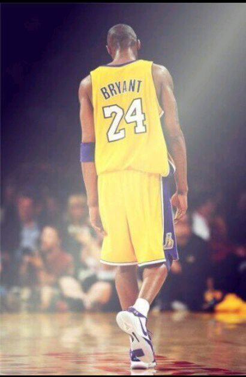
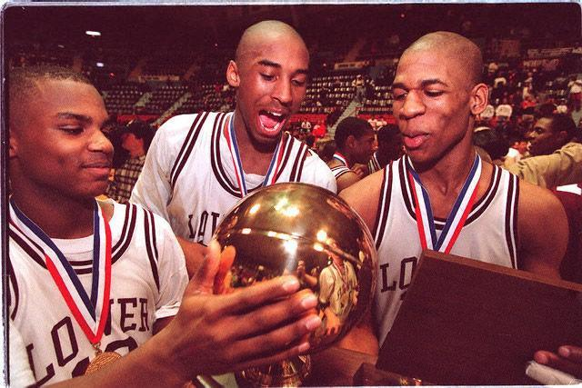
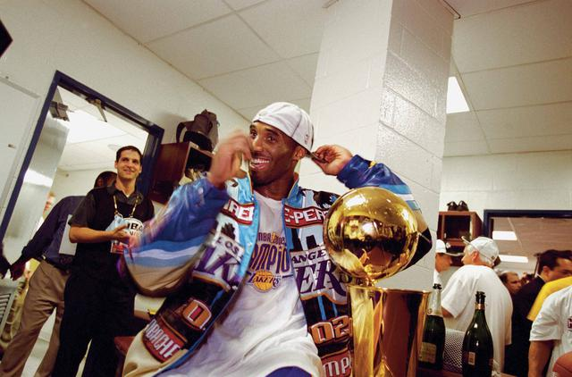

都知道我是谁了，不需要强行自我介绍。懒得去回忆我从哪来，干过写什么了；也拿不出几张自拍。所以放下我无趣的历史。来谈谈科比吧，关于科比，已经有那么多人说过那么多话了，我本不需多说，可如今却要说很多了。
科比

我不会成为第二个乔丹，我只想成为科比。
黑曼巴

无论谁防守我，我都坚信你会在我崩溃之前崩溃。
小飞侠

即便是耶稣也有人对他怀恨在心，我不需要解释什么。
蜗壳

如果湖人是一艘泰坦尼克，我愿意和它一起沉下去。
科比的童年
1978年8月23日科比降生在费城，“科比”是父亲吃牛排时给他起的，意思是神户；就是神户牛排。科比4岁学会打篮球，6岁全家迁往意大利，科比生性孤僻，在意大利时打球不爱传球，但是为他打下了扎实的欧洲篮球技术。91年，乔 ▪布莱恩特在意大利联赛退役，全家搬回美国费城生活，这时科比13岁。
回到美国之后，科比一个朋友也没有，如果有，那就是篮球。你总能看到他一个人在食堂吃饭，一个人上学。因为同学们显然不太喜欢这位操着意大利口音说英语的孤僻同学，于是科比一心一意打篮球，一个人打或者找人单挑，如果他被人虐了，他会深深记住，日后复仇。
高中大杀四方
科比高中在费城劳尔梅里高中，他凭借超出年龄的篮球水平和惊人的高中生涯赢得全美的认可，他可以打满5个位置。很多人去劳尔梅里高中就是为了看一个叫科比的年轻人的刷分表演。在高中最后一年30.8分+12板+6.5助攻+4抢断+3盖帽，拿下高中53年来第一个州冠军，高中四年，合计2883的得分打破了宾州高中得分记录，之前的纪录保持者，你们也熟悉，张伯伦。科比惊人的高中生涯拿到了奈史密斯年度最佳高中生球员，佳得乐全美年度最佳高中球员，麦当劳全美最佳阵容，今日美国全美第一阵容球员，高中教练唐纳对他的评价：“具有统治力的全能球员”。前美国队主教练老k说：“科比是历史最强高中生”
NBA选秀
在高中毕业之后，科比面临的大学还是NBA的抉择！有一万所大学都抢着要科比，全额奖学金，主力承诺，前程似锦。科比却等不及啦，要把天赋带到篮球水平最顶级的联盟里，因为他急着去和那些如云的高手过招。科比为什么会在13顺位，为什么会去湖人。拥有第八选秀权的篮网对科比极感兴趣。而科比只对强队感兴趣。声称如果被篮网选中，自己将意大利打球，而黄蜂选中他时，科比并没有去报到，而是私下与湖人达成协议。最终到了湖人，与奥尼尔组成了最具统治力的组合ok。
板凳岁月
科比之所以13顺位被选中，不是因为他的试训不够优秀。很多球队总经理担心球迷无法接受用高位选秀权去选一个高中生。这就他们拒绝科比的理由。无法将大任押一个年轻的孩子身上。来的湖人的科比同样也不会被当做超级明星培养。因为球队已经有了那么多名声在外的明星球员，科比第一个赛季无法获得太多的上场时间。
科比从替补打起，靠着自己的防守来获取机会，终于在他的第二个赛季进入了全明星。同时OK王朝也在慢慢建立
三连冠的到来和王朝的崩塌。
OK组合的建立使得湖人如日中天，迅速拿到三个总冠军，如此的轻松愉快，但是科比成长起来了，他不在是那个甘心做二当家年轻人，球队也组成了超级F4。而这个表面上豪华的阵容却是各自为战，科比只知道单打，其他球星也被限制，球队内部矛盾重重，总决赛输给平民球队活塞，最终导致F4分崩离析，奥尼尔走了，只剩科比独自带队。这也是科比爆发的开始。
带领湖人两连冠
太多人说离开了奥尼尔，科比没法带领球队夺得总冠军。科比证明自己的欲望，多么强烈。了解科比的都知道不仅仅是凌晨4点的洛杉矶，他的训练都是自虐性的，他要跟自己较劲 。科比曾经问经理：“他们都说我带领不了湖人夺冠，如果我带领湖人夺冠,他们会说什么”。经理：“他们会说你是全世界最伟大的球员!"。科比默不作声。而夺得总冠军时，一切需要证明的都证明给世人看了 。